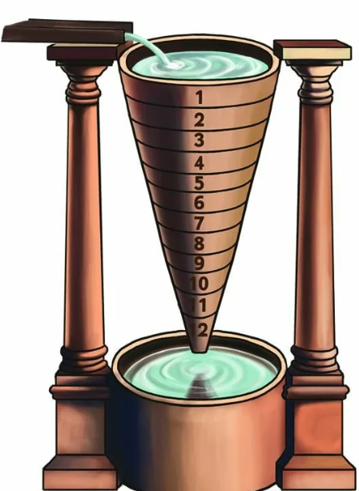
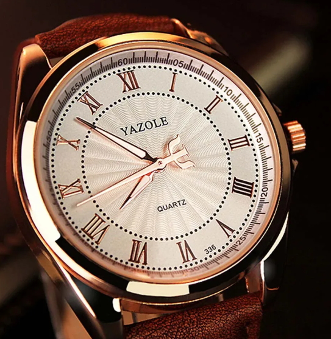
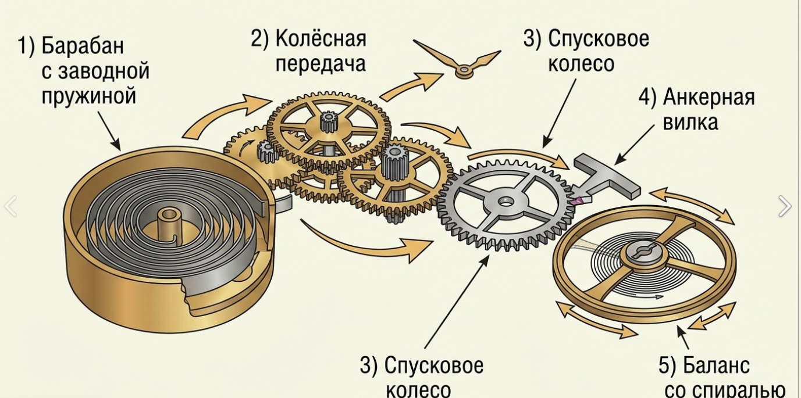

Это один из самых древних приборов для измерения времени: в Египте ими пользовались уже около 1500 года до н. э. Время определяют по положению тени от указателя, который называется гномоном. Такие часы не работают ночью и в пасмурную погоду.
Водяные часы

Рисунок: водяные часы
Водяные часы, или клепсидра, измеряют время по тому, как вода перетекает из одного сосуда в другой. Они были известны в Древнем Египте, Вавилоне, Китае и Греции. В отличие от солнечных, они могли работать ночью и в помещении.
Механические часы
Рисунок: маятниковые часы с гирей
Первые механические башенные часы появились в Европе в конце XIII века. Их приводил в движение опускающийся груз. В 1656 году нидерландский учёный Христиан Гюйгенс создал маятниковые часы, и точность хода резко выросла: ошибка сократилась примерно с 15 минут до 15 секунд в сутки.
Кварцевые часы

Рисунок: наручные кварцевые часы
Первые кварцевые часы построили в 1927 году в лабораториях Белла в США, а в 1969 году японская компания Seiko выпустила первые серийные кварцевые наручные часы Astron. Батарейка заставляет кристалл кварца колебаться, обычно 32 768 раз в секунду, а электронная схема превращает эти колебания в секундные импульсы.
Как устроены механические часы
Основные узлы механизма

Упрощённая схема, цифры соответствуют списку
Барабан с заводной пружиной хранит энергию.
Колёсная передача передаёт энергию дальше и связана со стрелками.